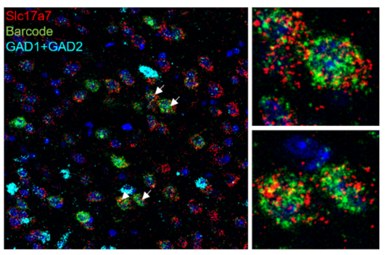

Code
library(Seurat)
library(scCustomize)
library(tidyverse)
library(cowplot)
library(ggtree)
library(aplot)
library(pheatmap)
library(ggpointdensity)
library(sciRcolor)
source('bin/Palettes.R')library(Seurat)
library(scCustomize)
library(tidyverse)
library(cowplot)
library(ggtree)
library(aplot)
library(pheatmap)
library(ggpointdensity)
library(sciRcolor)
source('bin/Palettes.R')all.Adult <- readRDS('../data/rds/all.Adult.rds')
Adult.Ex <- readRDS('../data/rds/Adult.Ex.rds')
PFC.MERFISH <- readRDS('../data/rds/PFC.MERFISH.rds')
sp.PFC <- readRDS('../data/rds/sp.PFC.rds')Adult.Ex.barcode <- subset(
Adult.Ex,
cells=colnames(Adult.Ex)[which(Adult.Ex$BC_num>0)]
)knitr::include_graphics("images/FigureS1_A.jpg", dpi = 300)knitr::include_graphics("images/FigureS1_B.png", dpi = 300)
seu <- all.Adult
cluster_order <- c("Adult1", "Adult2", "Adult3")
seu$sample <- factor(seu$sample, levels = cluster_order)
Idents(seu) <- "sample"
FigureS1_C <-
DimPlot_scCustom(
seurat_object = seu,
colors_use = col_sample,
reduction = 'umap',
figure_plot = TRUE,
label = F
) +
coord_fixed()
FigureS1_Cggsave("../pdf/FigureS1/FigureS1_C.pdf", plot = FigureS1_C,
height = 4, width = 6, units = "in")# ggtree
seu <- all.Adult
seu$MainType <- factor(
as.character(seu$MainType),
levels = c("Excitatory", "Inhibitory","Astro","Endo","Microglia","Oligo","OPC")
)
features <- c('Slc17a7','Gad2','Gja1','Flt1','C1qc','Ptgds','Pdgfra')
FigureS1_D <- DotPlot(
seu,
features = features,
group.by = 'MainType',
col.min=0, col.max=2, dot.scale = 10) +
scale_y_discrete(limits=rev) +
scale_color_gradientn(colours = c("lightblue3", "lightblue", "white", "red", "red4")) +
theme(axis.title.x=element_blank(), axis.title.y=element_blank(),
axis.line=element_blank(),
axis.text.x=element_text(angle = 45, hjust = 1, size = 17),
axis.text.y=element_text(size = 17),
legend.text = element_text(size = 17),
legend.title = element_text(size = 17)
) +
guides(colour = guide_colorbar(title = "Expression"),
size = guide_legend(title = "Percent")
)
FigureS1_Dggsave("../pdf/FigureS1/FigureS1_D.pdf", plot = FigureS1_D,
height = 4, width = 6, units = "in")Featurebox <- function(seuratobject, feature, text.size=15, hline.min=NULL,
hline.size=NA, cols=NULL){
p <- VlnPlot(seuratobject, feature=feature, adjust=0, pt.size=0, cols=cols) +
geom_boxplot() +
geom_hline(yintercept=hline.min, colour="dimgray",
linetype="dashed", size=hline.size)+
theme_bw() +
labs(x='') +
theme(panel.border=element_rect(size=1.5),
text = element_text(size = text.size, face='bold'),
plot.title = element_text(hjust = 0.5)) +
coord_flip() +
NoLegend()
return(p)
}
seu <- all.Adult
seu$MainType <- factor(seu$MainType, levels = c("Excitatory", "Inhibitory", "Astro", "Endo", "Microglia", "Oligo", "OPC"))
Idents(seu) <- "MainType"
p1 <- Featurebox(seu, feature='nFeature_RNA', cols=col_MainType) +
scale_y_continuous(breaks=c(0,2000,4000,6000,8000),
labels=c('0','2k','4k','6k','8k'),
limits=c(0,8000))
p2 <- Featurebox(seu, feature='nCount_RNA', cols=col_MainType) +
scale_y_continuous(breaks=c(0,10000,20000,30000,40000),
labels=c('0','10k','20k','30k','40k'), limits=c(0,40000)) +
theme(axis.text.y=element_blank())
p3 <- Featurebox(seu, feature='percent.mt', cols=col_MainType) +
scale_y_continuous(breaks=c(0,5,10,15,20),
labels=c('0%','5%','10%','15%','20%'), limits=c(0,20)) +
theme(axis.text.y=element_blank())
FigureS1_E <- plot_grid(p1,p2,p3,ncol=3,rel_widths=c(1,0.75,0.75))
FigureS1_Eggsave("../pdf/FigureS1/FigureS1_E.pdf", plot = FigureS1_E,
height = 4, width = 8, units = "in")gene_overlap <- intersect(all.Adult@assays$integrated@var.features,
PFC.MERFISH@assays$RNA@var.features)
avgexp_MERFISH <- AverageExpression(
PFC.MERFISH, group.by = 'L3_cluster', assays='RNA', slot = "data",
features = gene_overlap
)
avgexp_MERFISH <- avgexp_MERFISH$RNA
avgexp_MERFISH_zscore <- t(as.data.frame(scale(t(avgexp_MERFISH))))
avgexp_sc <- AverageExpression(all.Adult, group.by = 'SubType_Layer',
features = gene_overlap,
assays='RNA', slot = "data")
avgexp_sc <- avgexp_sc$RNA
avgexp_sc_zscore <- t(as.data.frame(scale(t(avgexp_sc))))
gene_cor <- cor(avgexp_MERFISH_zscore, avgexp_sc_zscore)
row.order <- c("L2/3 IT","L4/5 IT","L5 IT","L6 IT","L5 ET","L5/6 NP","L6 CT",
"Lamp5","Pvalb","Sst","Vip","Sncg","Astro","VLMC","Endo",
"Microglia","Oligo","OPC")
col.order <- c("L2/3 IT","L4/5 IT","L5 IT","L6 IT","L5 PT","L5 NP","L6 CT",
"Lamp5","Pvalb","Sst","Vip","Astro","Endo","Microglia",
"Oligo","OPC")
FigureS1_F <-
pheatmap::pheatmap(gene_cor[row.order,col.order],
color = colorRampPalette(c("white","#d42527"))(100),
breaks = seq(0,1,0.01),
cluster_rows = F, cluster_cols = F)
FigureS1_Fggsave("../pdf/FigureS1/FigureS1_F.pdf", plot = FigureS1_F,
height = 4, width = 5, units = "in")df <- as.data.frame(table(all.Adult$MainType, all.Adult$BC_label))
colnames(df) <- c('MainType','BC_label','Cell_num')
df$MainType <-
factor(df$MainType,
levels = c('Excitatory','Astro','Microglia','Inhibitory','Oligo','Endo','OPC'))
FigureS1_G <-
ggplot(df, aes(x = MainType, y = Cell_num, fill = BC_label)) +
geom_bar(stat = "identity", width = 0.7) +
scale_fill_manual(values = col_BC_label) +
geom_text(aes(label = Cell_num), color = "black", size = 5,
position = position_stack(0.5)) +
labs(x='', y='', title='') +
theme_minimal() +
theme(panel.grid = element_blank(),
text = element_text(size = 15),
legend.title = element_blank(),
legend.key.size = unit(1, "cm"))
FigureS1_Gggsave("../pdf/FigureS1/FigureS1_G.pdf", plot = FigureS1_G,
height = 6, width = 10, units = "in")BC_num <- table(Adult.Ex.barcode$BC_num)
BC_num1to9 <- BC_num[1:9]
BC_num <- c(BC_num1to9, '>9' = sum(BC_num[10:length(BC_num)]))
x <- BC_num/sum(BC_num)
labels <- paste(names(x),' targets', ' (', round(x,3)*100, '%,', BC_num, ')', sep = '')
df <- data.frame(Values = x, Labels = labels)
df$Labels <- factor(df$Labels, levels = labels)
FigureS1_H <-
ggplot(df, aes(x='', y=Values, fill=Labels)) +
geom_bar(stat = 'identity')+
coord_polar(theta = 'y')+
theme_void() +
theme(text = element_text(size = 18),
legend.title = element_blank(), legend.key.size = unit(1, "cm"),
plot.margin=unit(c(0,1,0,0),'lines')) +
scale_fill_manual(values = col_BC_num)
FigureS1_Hggsave("../pdf/FigureS1/FigureS1_H.pdf", plot = FigureS1_H,
height = 6, width = 8, units = "in")seu <- Adult.Ex
seu$SubType <- factor(
seu$SubType,
levels = c("L2/3_IT_1","L2/3_IT_2","L4/5_IT_1","L4/5_IT_2","L5_IT_1","L5_IT_2",
"L6_IT_1","L6_IT_2","L5_PT_1","L5_PT_2","L5_NP","L6_CT_1","L6_CT_2"
))
features <- c('Calb1','Ddit4l','Otof','Cux2','Rorb','Rspo1','Scn7a','Dio3',
'Deptor','S100b','Cpne2','Cbln1','Oprk1','Penk','Nnat','Npy2r',
'Pou3f1','Npr3','Npnt','Ndnf','Tshz2','Syt6','Foxp2',"Sla","Lsp1")
FigureS1_I <- DotPlot(
seu,
features = features,
group.by = 'SubType',
col.min=0, col.max=2, dot.scale = 10) +
scale_y_discrete(limits=rev) +
scale_color_gradientn(colours = c("lightblue3", "lightblue", "white", "red", "red4")) +
theme(axis.title.x=element_blank(), axis.title.y=element_blank(),
axis.line=element_blank(),
axis.text.x=element_text(angle = 45, hjust = 1, size = 17),
axis.text.y=element_text(size = 17),
legend.text = element_text(size = 17),
legend.title = element_text(size = 17)
) +
guides(colour = guide_colorbar(title = "Expression"),
size = guide_legend(title = "Percent")
)
FigureS1_Iggsave("../pdf/FigureS1/FigureS1_I.pdf", plot = FigureS1_I,
height = 6, width = 15, units = "in")seu <- subset(Adult.Ex, cells = colnames(Adult.Ex)[which(!(Adult.Ex$sample %in% c("Adult2","Adult3") & Adult.Ex$Ex_subtype == "PT" & Adult.Ex$BC_num > 0))])
seu <- subset(seu, cells = colnames(seu)[which(!(seu$BC_num > 0 & seu$Ex_subtype %in% c("CT", "NP")))])
df <- data.frame(
"UMAP_1" = seu@reductions$umap@cell.embeddings[,"UMAP_1"],
"UMAP_2" = seu@reductions$umap@cell.embeddings[,"UMAP_2"]
)
df$`VIS-I` <- seu$`VIS-I`
df$`SSp-I` <- seu$`SSp-I`
df$`ENTl-I` <- seu$`ENTl-I`
df$`ECT-I` <- seu$`ECT-I`
df$`CP-C` <- seu$`CP-C`
df$`PL-C` <- seu$`PL-C`
df$`RSP-C` <- seu$`RSP-C`
df$`ACB-C` <- seu$`ACB-C`
df$`BLA-C` <- seu$`BLA-C`
df$`ENTl-C` <- seu$`ENTl-C`
df$`AId-C` <- seu$`AId-C`
df$`ECT-C` <- seu$`ECT-C`
df$`MD-I` <- seu$`MD-I`
df$`SC-I` <- seu$`SC-I`
df$`RE-I` <- seu$`RE-I`
df$`VTA-I` <- seu$`VTA-I`
BC_col <- c('VIS-I'="#536dfe",'SSp-I'="#40c4ff",'ENTl-I'="#ffd740",'ECT-I'="#ffff8d",'CP-C'="#00bfa5",'PL-C'="#00c853",'RSP-C'="#64dd17",'ACB-C'="#a7ffeb",
'BLA-C'="#b9f6ca",'ENTl-C'="#ccff90",'AId-C'="#b2ff59",'ECT-C'="#69f0ae",'MD-I'="#ff5252",'SC-I'="#e040fb",'RE-I'="#ff80ab",'VTA-I'="#ea80fc")
df <- df[which(df$UMAP_1<7),]
max_limits <- c(50,50,50,50,200,100,10,50,
5,10,100,20,10,5,50,100)
plist <- list()
plist_legend <- list()
for (i in 1:16){
df_i <- df[which(df[,names(BC_col)[i]]>0.1),]
df_i <- df_i[,c("UMAP_1","UMAP_2",names(BC_col)[i])]
colnames(df_i) <- c("UMAP_1","UMAP_2","Value")
col <- pal_scircolor(100)
plist[[i]] <-
ggplot() +
geom_point(df, mapping = aes(x = UMAP_1, y = UMAP_2), color="black", size=0.5) +
geom_pointdensity(df_i, mapping = aes(x = UMAP_1, y = UMAP_2), size=0.5) +
#geom_point(df_i, mapping = aes(x = UMAP_1, y = UMAP_2), color=Value, size=0.5) +
scale_color_gradientn(colours = col,
na.value = col[length(col)],
limits = c(0,max_limits[i]),
breaks = c(0,max_limits[i])
) +
coord_fixed() +
ggdark::dark_theme_bw() +
labs(title = names(BC_col)[i], x="", y="", colour = "") +
theme(plot.title = element_text(hjust = 0.5),
axis.ticks = element_blank(), axis.text = element_blank(),
panel.grid = element_blank(),
legend.position = "right",
legend.key.width = unit(0.5, "lines"),
legend.key.height = unit(2, "lines"))
#ggsave(paste("../pdf/FigureS1_1/FigureS1_J/",names(BC_col)[i],".png",sep=""),
# plot = plist[[i]], height = 3, width = 3, units = "in")
}Inverted geom defaults of fill and color/colour.
To change them back, use invert_geom_defaults().FigureS1_J <- plot_grid(plotlist = plist, ncol = 8)
FigureS1_Jggsave("../pdf/FigureS1/FigureS1_J.pdf", plot = FigureS1_J,
height = 6, width = 24, units = "in")see Figure1_H & Figure1_J
DefaultAssay(Adult.Ex) <- 'RNA'
Adult.Ex <- FindVariableFeatures(Adult.Ex, selection.method = "vst",
nfeatures = 10000)
HVGs <- VariableFeatures(Adult.Ex)
HVGs_exp <- AverageExpression(Adult.Ex, assays = 'RNA', features = HVGs,
group.by = 'BC_label')
HVGs_exp <- as.data.frame(HVGs_exp$RNA)cor <- cor.test(HVGs_exp$Barcoded, HVGs_exp$Unbarcoded, "two.sided", "pearson")
R <- round(cor$estimate,2)
P <- format(cor$p.value, digits = 2)
P <- "2.2e-16"
FigureS1_L <-
ggplot(HVGs_exp, aes(x=Barcoded, y=Unbarcoded)) +
geom_smooth(method = "lm", color='red', size=0.5) +
geom_point(size=0.5, color='black') +
xlim(0,10) +
ylim(0,10) +
theme_bw() +
theme(panel.grid = element_blank(), text = element_text(size = 15)) +
labs(x='Gene expression (barcoded)', y='Gene expression (Non-barcoded)',
title = paste('R =',R,',','P <',P,sep=' '))
FigureS1_Lggsave("../pdf/FigureS1/FigureS1_L.pdf", plot = FigureS1_L,
height = 4, width = 4, units = "in")barcode <- c('VIS-I','SSp-I','CP-I','AUD-I','RSP-I',
'BLA-I','ACB-I','ENTl-I','AId-I','ECT-I',
'ACB-C','PL-C','ECT-C','ENTl-C',
'BLA-C','CP-C','AId-C','RSP-C',
'MD-I','RE-I','DR-I','VTA-I','LHA-I','SC-I')
avgexp_sc <- Adult.Ex@meta.data[Adult.Ex$BC_num>0, c(barcode,'sample')]
avgexp_sc <-
avgexp_sc |>
group_by(sample) |>
dplyr::summarize(across(1:24, ~sum(.x>0, na.rm = TRUE)))
avgexp_sc <- t(apply(avgexp_sc[,2:25],1,function(x){x/max(x)}))
avgexp_sc <- as.data.frame(t(avgexp_sc))
colnames(avgexp_sc) <- c('Adult1','Adult2','Adult3')df1 <- data.frame(
'x' = avgexp_sc$Adult1,
'y' = avgexp_sc$Adult2,
'type' = 'Adult1 VS Adult2'
)
df1 <- df1[which(df1[,1]>0 & df1[,2]>0),]
df2 <- data.frame(
'x' = avgexp_sc$Adult1,
'y' = avgexp_sc$Adult3,
'type' = 'Adult1 VS Adult3'
)
df2 <- df2[which(df2[,1]>0 & df2[,2]>0),]
df3 <- data.frame(
'x' = avgexp_sc$Adult2,
'y' = avgexp_sc$Adult3,
'type' = 'Adult2 VS Adult3'
)
df3 <- df3[which(df3[,1]>0 & df3[,2]>0),]
df <- rbind(df1,df2,df3)
cor <- cor.test(df$x, df$y, "two.sided", "pearson")
R <- round(cor$estimate,2)
P <- format(cor$p.value, digits = 2)
FigureS1_M <-
ggplot(df, aes(x=x, y=y)) +
geom_point(size=2, color="black") +
geom_smooth(method = "lm", color='red', se = F) +
xlim(0,1) +
ylim(0,1) +
theme_bw() +
theme(panel.grid = element_blank(), text = element_text(size = 12)) +
labs(x='Projection strength (scRNAseq sample1)', y='Projection strength (scRNAseq sample2)',
title = paste('R =',R,',','P =',P,sep=' '))
FigureS1_M`geom_smooth()` using formula = 'y ~ x'ggsave("../pdf/FigureS1/FigureS1_M.pdf", plot = FigureS1_M,
height = 4, width = 4, units = "in")barcode <- c('VIS-I','ACB-I','CP-C','AId-I','CP-I','ECT-C','AId-C','ECT-I',
'BLA-I','AUD-I','RSP-C','SSp-I','RSP-I','ACB-C','LHA-I')
seu <- subset(
sp.PFC,
cells = colnames(sp.PFC)[which(sp.PFC$ABA_hemisphere=="Left")]
)
seu$BC_num <- apply(seu@meta.data[,barcode]>0,1,sum)
avgexp_sp <- seu@meta.data[seu$BC_num>0, c(barcode,'slice')]
avgexp_sp <-
avgexp_sp |>
dplyr::summarize(across(1:15, ~sum(.x>0, na.rm = TRUE)))
avgexp_sp_sum <- as.numeric(avgexp_sp/max(avgexp_sp))
seu <- Adult.Ex
seu@meta.data[,barcode][is.na(seu@meta.data[,barcode])] <- 0
seu$BC_num <- apply(seu@meta.data[,barcode]>0,1,sum)
avgexp_sc <- seu@meta.data[seu$BC_num>0, c(barcode,'sample')]
avgexp_sc <-
avgexp_sc |>
group_by(sample) |>
dplyr::summarize(across(1:15, ~sum(.x>0, na.rm = TRUE)))
avgexp_sc <- t(apply(avgexp_sc[,2:16],1,function(x){x/max(x)}))
avgexp_sc_sum <- as.numeric(colMeans(avgexp_sc))
cor <- cor.test(avgexp_sp_sum, avgexp_sc_sum, "two.sided", "pearson")
R <- round(cor$estimate,2)
P <- format(cor$p.value, digits = 2)
df <- data.frame(
'sp_value' = avgexp_sp_sum,
'sc_value' = avgexp_sc_sum
)
FigureS1_N <-
ggplot(df, aes(x=sp_value, y=sc_value)) +
geom_point(size=2, color='black') +
geom_smooth(method = "lm", color='red', se = F) +
xlim(0,1) +
ylim(0,1) +
theme_bw() +
theme(panel.grid = element_blank(), text = element_text(size = 12)) +
labs(x='Projection strength (in situ sequencing)', y='Projection strength (scRNAseq)',
title = paste('R =',R,',','P =',P,sep=' '))
FigureS1_Nggsave("../pdf/FigureS1/FigureS1_N.pdf", plot = FigureS1_N,
height = 4, width = 4, units = "in")fmost <- c('CP-I'=5916,'ACB-I'=3099,'RSP-I'=1092,'VIS-I'=660,'SSp-I'=1156,'AUD-I'=353,'BLA-I'=835,'AId-I'=2746,'ECT-I'=552,'ENTl-I'=530)
fmost_sum <- as.numeric(fmost/max(fmost))
seu <- Adult.Ex
seu@meta.data[,names(fmost)][is.na(seu@meta.data[,names(fmost)])] <- 0
seu$BC_num <- apply(seu@meta.data[,names(fmost)]>0,1,sum)
avgexp_sc <- seu@meta.data[seu$BC_num>0, c(names(fmost),'sample')]
avgexp_sc <-
avgexp_sc |>
group_by(sample) |>
dplyr::summarize(across(1:length(fmost), ~sum(.x>0, na.rm = TRUE)))
avgexp_sc <- t(apply(avgexp_sc[,2:(length(fmost)+1)],1,function(x){x/max(x)}))
avgexp_sc_sum <- as.numeric(colMeans(avgexp_sc))
cor <- cor.test(fmost_sum, avgexp_sc_sum, "two.sided", "pearson")
R <- round(cor$estimate,2)
P <- format(cor$p.value, digits = 2)
df <- data.frame(
'fmost_value' = fmost_sum,
'sc_value' = avgexp_sc_sum
)
FigureS1_O <-
ggplot(df, aes(x=fmost_value, y=sc_value)) +
geom_point(size=2, color='black') +
geom_smooth(method = "lm", color='red', se = F) +
xlim(0,1) +
ylim(0,1) +
theme_bw() +
theme(panel.grid = element_blank(), text = element_text(size = 15)) +
labs(x='Gao et al. fMOST Projection', y='our scRNAseq Projection',
title = paste('R =',R,',','P =',P,sep=' '))
FigureS1_Oggsave("../pdf/FigureS1/FigureS1_O.pdf", plot = FigureS1_O,
height = 4, width = 4, units = "in")